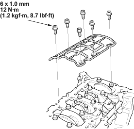
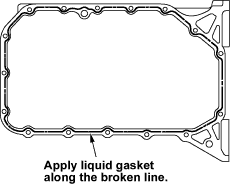
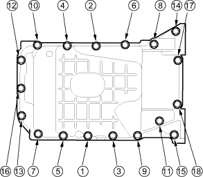

- Install the baffle plate.

- Install the oil pump (see page 8-12).
- Install the oil pan (see page 7-28).
- Install the cylinder head (see page 6-42).
- Install the transmission (see page 13-10).
- Install the engine assembly (see page 5-10).

- Remove old liquid gasket from the oil pan mating surfaces, bolts, and bolt holes.
- Clean and dry the oil pan mating surfaces.
- Apply liquid gasket, P/N 08C70-K0334M or 08C70-X0331S, evenly to the cylinder block mating surface of the oil pan and to the inner threads of the bolt holes.
NOTE: Do not install the parts if 5 minutes or more have elapsed since applying liquid gasket. Instead, reapply liquid gasket after removing old residue.

- Install the oil pan.
- Tighten the bolts in two or three steps. In the final step, tighten all bolts, in sequence, to 12 Nm (1.2 kgf/m, 8.7 lbf/ft).
